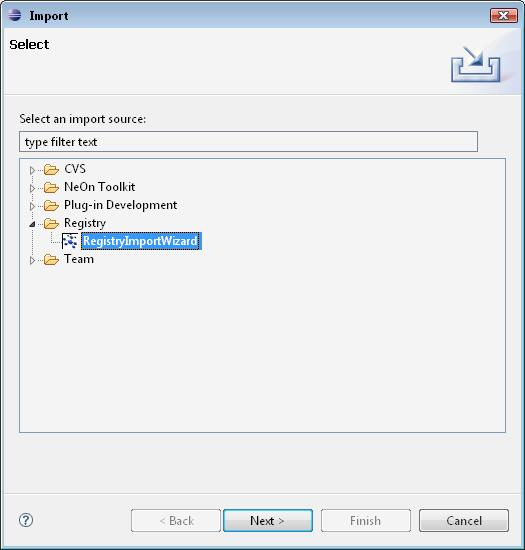
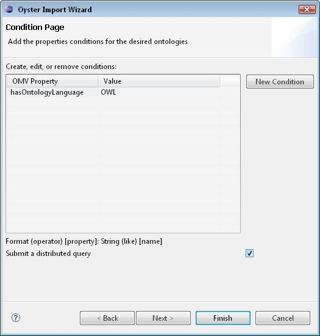
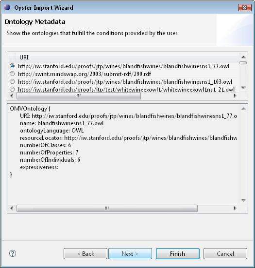
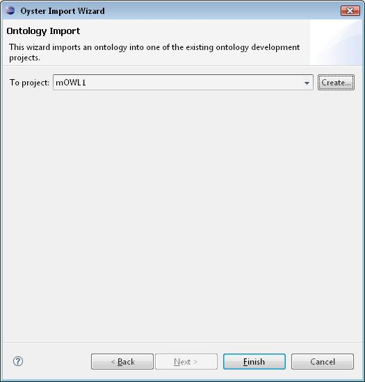
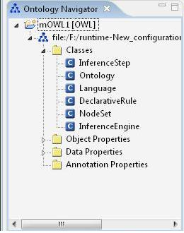

The following figures show how to use the Oyster import wizard Plugin:

- Specify the conditions (i.e. OMV properties) that should be
fulfilled by the ontologies we are searching. The user can specify if
the search should be done locally (default) or distributed.

- Select an ontology from the result list

- Select the NeOn project in which will be imported the selected
ontology. Note that the selected entry is the OMV metadata (not the
ontology itself). However to import the ontology into the workspace we
use the resourceLocator information that is the location where the
actual ontology can be found

- Work with the imported ontology in your workspace
